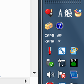
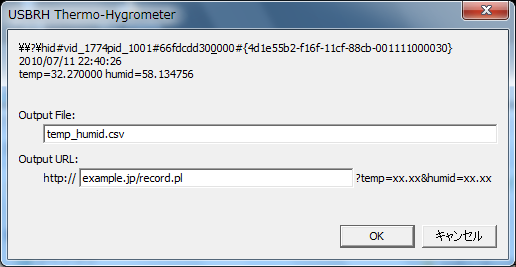
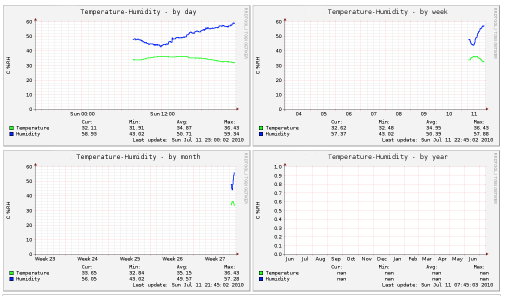

ストロベリー・リナックスが販売しているUSB温度・湿度計モジュール・キット(メーカー品番：USBRH)(完成品)用の計測データ記録ツールです。

タスクバーの通知アイコンとして常駐し、一定間隔で温度・湿度を計測・記録します。計測したデータはダイアログボックス上で表示したり、ファイルへ追記したり、指定したURL(CGI)へ送信したりできます。

工夫次第ではサーバー上でグラフ化するといった使い方も出来ます。
